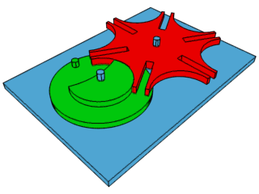
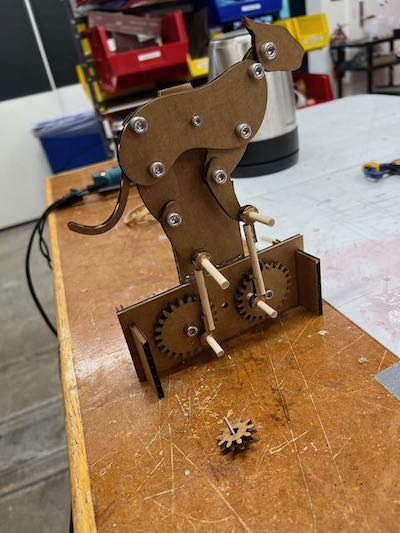

<div class="textcontainer">
<p class="margin"> </p>
<h3>Week 3: Hand Tools and Fabrication</h3>
<p class="margin"> </p>
<div class="flexrow">
<a id="btn" href="./week3.zip" download>Download my CAD files from this week!
</a>
</div>
<p class="margin"> </p>
<h4>Kinetic Sculpture</h4>
My plan for my kinetic sculpture is to make a clock! I think this will be a good place to start because there are a lot of tutorials and designs online that I can loosely follow and tweak as needed, which is good because of how bad I am at fusion360 still! I also think a clock is good idea because in theory, it's a very simple machine. You just need to make the dials turn. As far as getting the clock to be accurate, so that one second is one second and so forth, I'd just need to tweak the gear ratios inside the sculpture, which honestly seems like a fun bit of math, and I'm a physics major, so that's cool.
<p class="margin"> </p>
<div class="flexrow">
<img src="./clock_example.jpeg" alt="">
</div>
<p class="caption">This is a clock!</p>
The first thing I wanted to learn how to make was a geneva mechanism. When I first pitched the idea of making a clock, I had no idea what that actually was. Bobby explained it to me, and it's a really nifty mechanism that basically allows a gear system to turn in discrete increments as opposed to continuous motion. It's basically the part that makes the actual ticking of the clock that you see.
<p class="margin"> </p>
<div class="flexrow">

</div>
<p class="caption">A geneva mechanism.</p>
It wasn't too hard to model one in fusion360, There were a lot of tutorials for this particular piece. I started to wonder if maybe I ought to increase the scope of the sculpture. I think making something akin to a grandfather clock with a swinging pendulum would be a great way to experiement with some of the other mechanisms we read about in class.
<p class="margin"> </p>
<div class="flexrow">

</div>
<p class="caption">My geneva mechanism.</p>
</div>